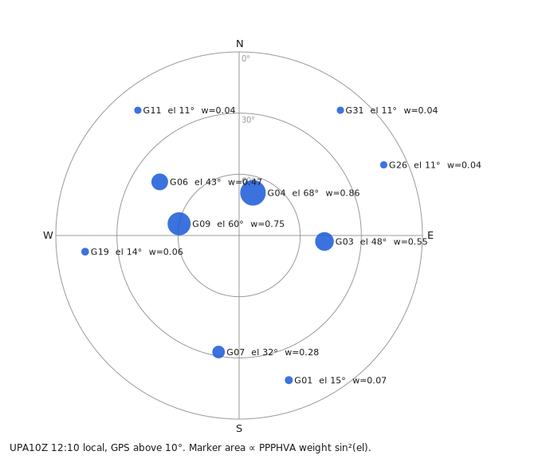
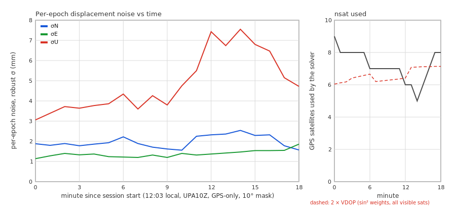
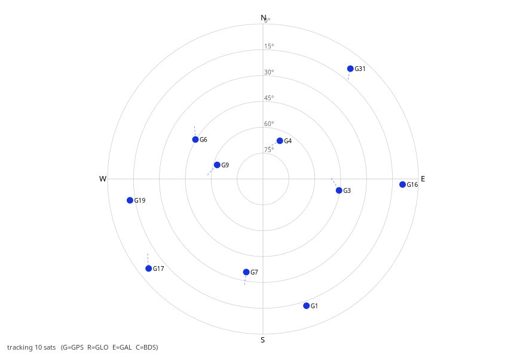

Panagiotis Elias · GaiaSeis / NtripClient.jl · analysis of the UPA10Z session of 2026-09-09 (12:03–12:22 local, GPS-only, single-frequency variometric, 10 Hz, 10° mask, SSR SSRA00GFZ0). All numbers below come from the session log logs/GaiaSeis-UPA10Z.log, the broadcast ephemeris mount BCEP00BKG0 and the live web panels.
PPPHVA's single-frequency variometric LSQ (src/Filtering/sfvlsq.jl) solves, every epoch, the time-differenced carrier-phase observation equation
ΔΦs(t) − ΔCs(t) = esᵀ · Δr + c·Δδtr + εs
where ΔΦ is the phase difference between epochs t and t−1 for satellite s, ΔC the modelled change (orbit, clock, relativity, wind-up, tides, tropo), es the unit line-of-sight vector, Δr the 3-D displacement over the epoch and Δδtr the receiver-clock change. Each row is weighted
Ws = csys · cos²(90° − els) = csys · sin²(els) (sfvlsq.jl line 104; csys = 1 for GPS)
and the estimate is x̂ = (HᵀWH)⁻¹HᵀW·v. The covariance of x̂ is σ₀²·(HᵀWH)⁻¹; rotated into the local frame its diagonal gives the weighted dilution of precision EDOP, NDOP, VDOP. The per-component noise is simply σ₀ × DOP. A satellite at 15° elevation has weight 0.07, at 45° 0.50, at 70° 0.88, so the solution is carried almost entirely by the satellites above ~30°.

Figure 1, GPS satellites above the 10° mask at 12:10 local, marker area proportional to the sin²(el) weight.
| Weighting | EDOP | NDOP | VDOP | NDOP/EDOP | VDOP/EDOP |
|---|---|---|---|---|---|
| none | 0.53 | 0.57 | 1.11 | 1.08 | 2.1 |
| sin(el) | 0.87 | 0.98 | 1.77 | 1.13 | 2.0 |
| sin²(el), PPPHVA | 1.20 | 1.62 | 3.14 | 1.35 | 2.6 |
| sin²(el), satellites < 20° effectively removed | 1.30 | 1.99 | 4.68 | 1.53 | 3.6 |
East is pinned by two high satellites almost opposite each other east–west: G03 (az 94°, el 48°) and G09 (az 281°, el 60°). North has to lean on G04 (az 18° but el 68°, nearly overhead, so almost no horizontal leverage), G07 (az 190°, el 32°) and the low north-east/north-west satellites G11, G26, G31 (el 10–13°) that carry 2–4 % weight each. The often-quoted "northern sky hole" of the 55°-inclination GPS constellation is the reason those northern satellites are low in the first place.
| minute | σN (mm) | σE (mm) | σU (mm) | N/E | GPS used |
|---|---|---|---|---|---|
| 0 | 1.88 | 1.14 | 3.06 | 1.65 | 9 |
| 2 | 1.89 | 1.40 | 3.72 | 1.35 | 8 |
| 5 | 1.93 | 1.24 | 3.86 | 1.56 | 8 |
| 8 | 1.71 | 1.32 | 4.26 | 1.30 | 7 |
| 11 | 2.25 | 1.32 | 5.50 | 1.70 | 7 |
| 12 | 2.32 | 1.37 | 7.43 | 1.69 | 6 |
| 14 | 2.54 | 1.47 | 7.55 | 1.73 | 5 |
| 17 | 1.78 | 1.55 | 5.15 | 1.15 | 8 |
Two further signatures confirm that this is geometry acting on white phase noise and not a site or software effect:

Figure 2, per-minute robust noise (left) and GPS satellites used by the solver (right, solid) with 2×VDOP from all visible satellites (dashed).
Between 12:03 and 12:17 local the constellation above the 10° mask went from 10 to 9 satellites, but what the solver could actually use went from 9 to 5:
| satellite | 12:06 | 12:17 | what happened |
|---|---|---|---|
| G17 | el 11°, used | set | dropped below the 10° mask at 12:06 |
| G31 | el 14°, used | set | dropped below the mask at 12:16 |
| G01, G19 | el 19°, 16° | el 13°, 12° | hovering just above the mask; intermittent loss of lock → excluded epoch by epoch |
| G11, G26 | el 10–11° | el 11–13° | above the mask by ephemeris but not tracked by the receiver at all (the GUI sky plot at 12:19 shows G16/G17/G19/G31 instead), obstruction or receiver channel policy on the NE/NW horizon |
| G16 | below horizon | rising | reached 10° only at 12:24, then needed ephemeris + SSR before it could be used |
| G03, G04, G06, G07, G09 | el 34–67° | the five that remained | |
| configuration | Σ weights | EDOP | NDOP | VDOP |
|---|---|---|---|---|
| 12:06, 10 visible | 3.16 | 1.17 | 1.74 | 3.01 |
| 12:17, 9 visible (if all had been usable) | 3.13 | 1.23 | 1.66 | 3.45 |
| 12:17, the 5 the solver kept | 2.94 | 1.32 | 2.21 | 6.39 |
VDOP 3.0 → 6.4 predicts a 2.1× rise in vertical noise; observed 3.1 → 7.5 mm (2.4×). Note the "Σ weights" column: the five kept satellites carry 94 % of the total weight, so even if the four low ones had been usable the weighted VDOP would only have been 3.45. In GPS-only mode, with sin² weighting, the vertical component effectively rests on whatever is above ~30°, and at 38° N that is often only four to six satellites. It is the same reason U is always 2–3× noisier than E.

Figure 3, the GUI sky plot at 12:19 local: the receiver tracks 10 GPS satellites, but the usable set is G03/G04/G06/G07/G09 plus, intermittently, G01 and G19.
enable_gal = true). The receiver already streams Galileo MSM (1095, ~600 messages/min), the ephemeris mount BCEP00BKG0 and the SSR mount SSRA00GFZ0 both carry Galileo (72 satellites had SSR corrections in this session). NOA10Z runs this way (MANUAL §10.2). Roughly doubling the satellites above 30° cuts VDOP by ~√2 and removes most of the sensitivity to setting satellites.The receiver does not send RTCM 1005/1006, so GaiaSeis seeds the a-priori position from the profile. A wrong seed enters the variometric solution as a constant per-epoch bias (≈1.9·10⁻⁵ rad per epoch × position error); the previous seed (height copied from NOA10Z) gave N −2.1, E +3.6, U −2.5 mm per epoch and, at every stream gap, one-sided east spikes of +7 to +17 mm. The position was re-estimated with tools/spp_estimate.jl: iono-free GPS pseudoranges from the mount, 32 broadcast ephemerides, 811 epochs (81 s), median of per-epoch solutions with 9 satellites, per-epoch scatter 2.4 / 1.0 / 0.9 m in X/Y/Z.
| Latitude | Longitude | Ellipsoidal height | |
|---|---|---|---|
| SPP estimate (WGS84 / broadcast frame) | 38.2832291° N | 21.7862421° E | 123.79 m |
| previous profile seed | 38.2832290° | 21.7862670° | 488.88 m |
| X (m) | Y (m) | Z (m) | |
|---|---|---|---|
| ECEF | 4 655 048.533 | 1 860 590.108 | 3 930 246.352 |
Realistic accuracy of this estimate is 2–3 m (broadcast orbits/clocks, modelled troposphere, L1-only ionosphere for satellites without L2). At that level the residual variometric bias is below 0.1 mm per epoch. After writing the seed into the profile the measured bias was N +0.01, E +0.02, U −0.25 mm per epoch and the one-sided spikes disappeared. If a surveyed coordinate exists it should replace this estimate; enabling 1005/1006 on the receiver makes the profile seed irrelevant.